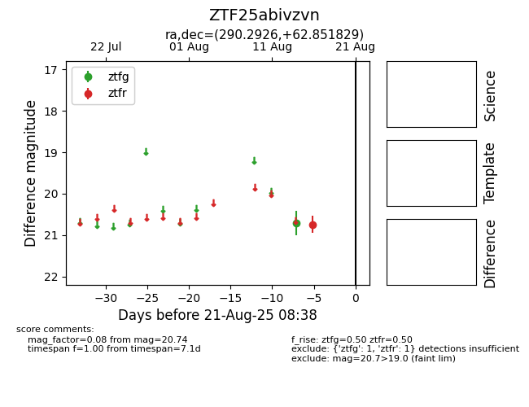

Target ZTF25abivzvn at 2025-08-21 08:38, see:
FINK: fink-portal.org/ZTF25abivzvn
Lasair: lasair-ztf.lsst.ac.uk/objects/ZTF25abivzvn
ALeRCE: alerce.online/object/ZTF25abivzvn
alt names
ZTF25abivzvn (ztf,alerce)
coordinates:
equatorial (ra, dec) = (290.2926,+62.85183)
galactic (l, b) = (94.0090,+20.68391)
photometry
last ztfg=20.71, ztfr=20.74
1 ztfg, 1 ztfr detections
